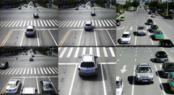

安安科技
(256) 152 3658
主页
产品
行业方案
客户展示
新闻中心
联系我们
行业方案

违法取证系统解决方案
海康威视违法取证系统解决方案能够对机动车闯红灯、不按所需行进方向驶入导向车道、违法停车、压线、变道、逆行、超速、人行横道不避让行人、违反规定使用专用车道等各种交通违法行为进行取证治理，减少因各种交通违法行为造成的交通事故、交通拥堵和交通混乱，改善城市交通环境，提高城市交通管理水平，提升城市形象和品味。
查看详细
高清卡口系统解决方案
海康威视高清卡口系统解决方案（即公路车辆智能监测记录系统）基于先进的图像识别技术、运动检测技术，实现机动车图片抓拍、车辆号牌识别等车辆特征数据采集，对道路通行车辆的构成、流量分布、违法情况进行常年不间断的自动记录，为快速纠正交通违章行为、快速侦破交通事故逃逸和机动车盗抢、套牌案件提供重要的技术手段和证据。
查看详细
交通信号控制系统解决方案
海康威视交通信号控制系统解决方案通过交通信号控制机的联网运行和控制，实现对路口交通信号配时方案的自动控制、优化，减少车辆在路口的等待时间，均衡路网交通流量，提高道路的通行效率，缓解交通压力。同时系统还兼具交通参数采集功能，能够实时采集、统计交通流信息。
查看详细
道路智慧监控系统解决方案
海康威视道路智慧监控系统解决方案能够在满足道路监控场景要求的基础上，对视频中的机动车、非机动车、行人进行目标分类和目标特征识别，实现视频的结构化处理，满足公安交通管理部门对海量视频中特定对象的高效查证需求，实现对机动车辆的主动管控，提高视频资源的利用率。
查看详细
移动警务系统解决方案
海康威视移动警务系统解决方案针对交通管理的业务需求，提供一套集现场取证、执法过程记录、警力调度、即时通讯、结构化数据交互功能于一体的移动警务系统，通过无线通信技术将信息系统的实战能力延伸至路面交警，使其能实时获取跨区域公安交通管理信息，并实现路面交警道路交通违法处理及信息实时上传等功能，同时可帮助交警部门规范业务开展过程，从而更好地保障日常工作的开展。
查看详细
交通参数采集系统解决方案
海康威视交通参数采集系统解决方案采用一体化的视频车检器，通过视频方式进行车道流量、车道平均车速、排队长度、车头时距等交通数据的检测采集，通过在城市道路上的关键路口、路段部署可以实时了解路网的运行状况及其变化规律，为交通管理决策和交通规划设计提供科学数据支撑。
查看详细
交通事件采集系统解决方案
海康威视交通事件采集系统解决方案采用智能视频分析技术，可以对高速公路和城市快速路上的车辆停车、拥堵、逆行、行人出现、遗落物等各类交通异常事件进行检测，并实时上传监控中心进行报警提示，从而进行快速处理。系统同时具有车道流量、车道平均车速、排队长度、车头时距等交通数据的采集功能，可以为交通管理决策和交通规划提供数据支持。
查看详细
多源信息融合交通诱导系统解决方案
海康威视多源信息融合交通诱导系统解决方案支持牌识数据源、固定数据源、浮动车数据源等多种数据源做输入，能够融合各种数据源不同的特性及优势分析掌握和预测路网的交通状态，通过发布路况诱导信息使路网交通流均衡分布，有效预防、缓解和尽快消除道路交通拥堵，提高现有道路的通行能力，为交通参与者提供良好的出行体验。
查看详细
交通管理数据中心解决方案
海康威视交通管理数据中心解决方案融合IT界云数据中心的建设思路与交通管理领域特有的应用特点，依托可弹性扩展的虚拟化资源池系统、PB级的云存储系统、敏捷灵活的网络系统、支持海量数据并行处理的大数据分析系统、智能分析系统（交通数据二次结构化）、安全容灾备份系统、统一整合的运维管理系统，打造弹性的、高效的、可扩展的、基于云平台架构的数据中心。
查看详细
交通视频服务系统解决方案
海康威视交通视频服务系统解决方案针对当今城市中易发道路拥堵的现象，根据老百姓的出行需求，采用“互联网+交通视频管理”的思路，利用海康威视萤石云平台，由交通相关部门开放道路视频资源和发布路况信息，公众通过手机APP可随时掌握交通状况，从而选择最适合最便捷的路线出行，提高出行体验。
查看详细
车检线视频监控系统解决方案
海康威视车检线视频监控系统解决方案针对机动车检测站社会化后一些地方存在的检测流于形式的问题，通过在各车辆检测站安装视频监控系统，帮助交警等相关管理部门进一步加强对机动车检测过程的监管，提高检测的客观性和可靠性，有效地提高检测质量，保证行车安全。
查看详细